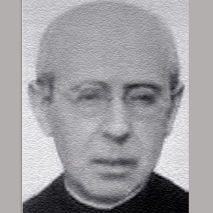

Isusovački blaženici
Isusovac · Svećenik · Mučenik
Bl. Costantino Carbonell Sampere
1866.–1936.
Nekadašnji poglavar isusovaca u Alicanteu zatvoren je na početku Španjolskoga građanskog rata i ubijen s dvojicom braće iz iste zatočene redovničke skupine.
Tekst je preveden i prilagođen uz pomoć umjetne inteligencije.

Izvor slike
- Spomendan
- 23. kolovoza
- Zaštitništvo
- Nije navedeno u izvoru
- Životni vijek
- 1866.–1936.
- Djelovanje
- Obrazovanje i poučavanje vjere · Progoni i progonstvo · Mučeništvo
- Razdoblje
- 19., 20. stoljeće
- Služba
- Poglavar u Alicanteu i ministar zajednica
- Mučeništvo
- 23. kolovoza 1936.
U kalendaru zbirke koristi se dan smrti. Taj datum nije zasebna potvrda liturgijskoga spomendana.
Životopis
Costantino Carbonell Sampere rođen je 1866. u Alcoiju. Svećeničko ređenje primio je 1901., a posljednje zavjete položio 1903. Služio je kao učitelj, poglavar u Alicanteu i ministar različitih zajednica. Zadaća ministra uključivala je brigu za praktični život redovničke kuće; službeni dekret posebno ističe njegove upraviteljske sposobnosti.
U Gandíju se vratio 1926. kao suradnik Tome Sitjara. Nakon raspuštanja Družbe u Španjolskoj 1932. subraća su živjela raspršeno. Početak građanskoga rata izložio ih je novom progonu. Carbonell je sa Sitjarom, Pedrom Gelabertom i Ramónom Grimaltosom zatvoren u školu pretvorenu u tamnicu. Posjetitelji su im donosili hranu i madrace.
Sitjar je odveden i ubijen 19. kolovoza. Četiri dana poslije stražari su izveli i njegovu trojicu drugova. Carbonell i dvojica braće odvedeni su prema masliniku izvan grada. Pogubljeni su 23. kolovoza 1936., nakon približno mjesec dana zatočenja.
Njegov životopis čuva i dugu svakodnevnu upraviteljsku službu i vjernost zajednici u zatočenju. Sa subraćom je proglašen blaženim 11. ožujka 2001.
Tekst je preveden i prilagođen uz pomoć umjetne inteligencije.
Pročitaj više na izvornoj stranici ↗